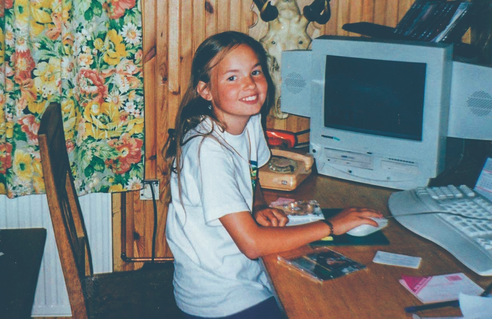
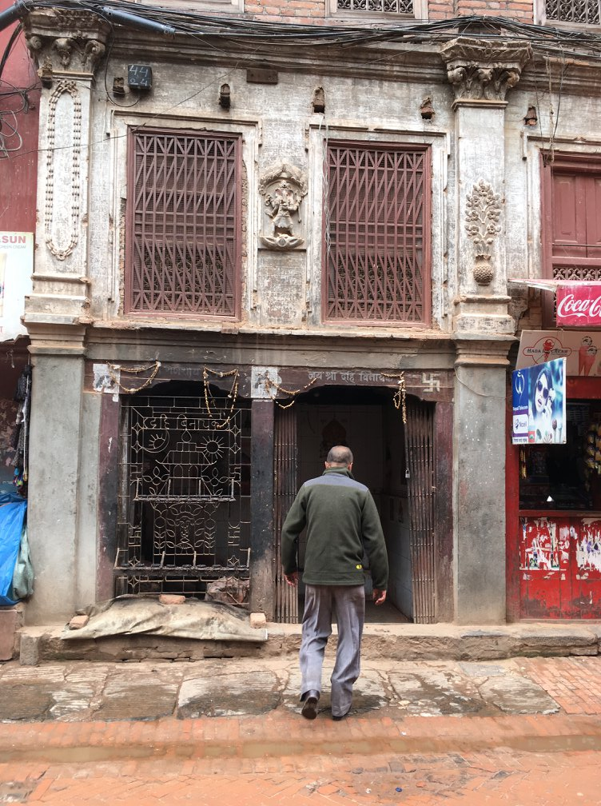

About me
I was born in Gdansk, a city in Poland just nearby the Baltic sea, but I’ve been living almost one-third of my life in Japan now.
In Poland I was studying Japanese language and culture and on my third year I came to Tokyo for 1 year exchange program. After that I stayed here and did my master thesis about westernization of japanese food in the 70s (unfortunately it's much more boring than it sounds).
Last 5 years I was working as Account Manager but since I started learning how to code I’m aiming to change my career to full-stack developer.
Some random facts
- My parents bought their first PC when I was very little, so I played my first games on DOS.
- I love cooking and have a LOT of cookbooks at home.
- I really like strange shoues- among others I own a pair of glitter Darth Vader shoes.
- My dream is to visit all asian countries. I went to 10 countries already.
- I don’t like wearing socks and if possible I walk barefoot.
- I’m a hard-core Tomb Raider series geek since I was 11.
- I ate rat meat once in Vietnam and it was quite delicious.
- I love reading! The thicker the book the better. Recently I was obsessed with Karl Ove Knausgårds “My struggle” book series.

Photos from my travels
